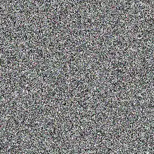

Une image générée par intelligence artificielle apparaît en quelques secondes, mais elle
résulte de milliards d'opérations de calcul réalisées par une carte graphique (GPU)
qui consomme de l'électricité. Dans cet atelier, vous allez découvrir comment fonctionne cette
génération, puis comparer trois configurations pour comprendre quels paramètres
influencent les ressources nécessaires, et à quel prix pour la qualité de l'image.
Comment lire les données de cet atelier
Transparence : les trois images comparées et leurs mesures proviennent de
vraies générations, réalisées en amont sur une carte graphique (votre navigateur n'en
lance aucune). Le schéma du débruitage est une illustration. Chaque valeur est accompagnée de son statut :
Mesuré obtenu lors d'une expérience
Estimation théorique calculé à partir d'une hypothèse
Valeur simulée fictive, pour illustrer
Donnée non mesurée indisponible
Comprendre la génération d'images
La plupart des générateurs d'images actuels reposent sur des modèles de diffusion.
Leur idée est surprenante : au lieu de dessiner l'image trait par trait, ils partent d'un
bruit aléatoire et le « nettoient » progressivement.
On part d'une image composée uniquement de bruit, comme la neige d'un vieux téléviseur.
À chaque étape, le modèle estime quelle part de l'image est du bruit, guidé par la
description demandée (le prompt), et en retire une partie.
Les grandes formes apparaissent d'abord, puis les détails fins.
Après le nombre d'étapes prévu, l'image est terminée.
Chaque étape correspond à un passage complet de l'image dans un réseau de neurones comptant
plusieurs centaines de millions, voire plusieurs milliards, de paramètres. Pour alléger ce travail,
de nombreux modèles opèrent sur une version compressée de l'image (on parle d'« espace latent »),
mais le principe reste le même.

BruitImage finale
Départ : un bruit aléatoire, sans aucune image.
Schéma illustratif : un vrai modèle effectue généralement bien plus d'étapes.
Le rôle du GPU
Le processeur graphique (GPU) contient des milliers d'unités de calcul capables de travailler
en parallèle. Il exécute très rapidement les multiplications de matrices dont les réseaux de
neurones sont faits. Sa consommation électrique dépend notamment de sa charge et de la
durée pendant laquelle il travaille.
Pourquoi un coût énergétique ?
Plus il y a de calculs, plus le GPU travaille longtemps ou intensément, et plus il consomme.
S'y ajoutent le reste de la machine (processeur, mémoire, refroidissement), le centre de données
qui l'héberge, et l'impact de la fabrication du matériel. Une seule image coûte peu ;
des millions de générations quotidiennes, beaucoup plus.
Comprendre les paramètres
Quatre éléments influencent fortement la quantité de calcul nécessaire.
Résolution
Les dimensions de l'image. Doubler le côté (512 → 1024 px) multiplie le nombre de pixels
par quatre, et donc les calculs et la mémoire nécessaires, parfois plus encore.
Nombre d'étapes
Le nombre d'itérations de débruitage. Chaque étape ajoute un passage dans le modèle, donc du temps
de calcul. Mais la qualité ne progresse pas proportionnellement : au-delà d'un certain seuil,
les étapes supplémentaires apportent peu.
GPU
Il accélère les calculs. Deux GPU différents ne mettent ni le même temps ni la même puissance
pour produire une image identique : le matériel fait partie de l'équation.
Modèle utilisé
Son architecture et ses optimisations modifient les ressources nécessaires. Tous les modèles
ne fonctionnent pas avec les mêmes paramètres : certains sont conçus pour 1024 px, d'autres
pour générer en très peu d'étapes.
Expérimenter les configurations
Sélectionnez une configuration pour consulter ses paramètres, son illustration et les données disponibles.
Comparer les résultats
Les trois configurations côte à côte, avec la même demande (prompt) et la même graine aléatoire.
Notez que changer la résolution change aussi la composition. Passez en vue détail
pour observer la finesse des pixels.
Vue d'ensemble : les trois images sont affichées à la même taille.
Tableau récapitulatif des indicateurs
Configuration
Résolution
Étapes
Temps de génération
Consommation énergétique
Qualité visuelle
Volume de calcul relatif (estimation théorique)
Comment est estimé le volume de calcul relatif ?
Hypothèse simplifiée : calcul ∝ nombre de pixels × nombre d'étapes, la configuration la plus coûteuse
valant 100. C'est un ordre de grandeur théorique, pas une mesure : en pratique, certaines
opérations (l'attention) croissent plus vite que le nombre de pixels, d'autres coûts restent fixes
(chargement du modèle, lecture du prompt, décodage final de l'image), et un modèle accéléré peut avoir
un coût par étape différent. Surtout, ce volume ne dit rien de la puissance réellement appelée par le
matériel : il ne remplace pas une mesure d'énergie. Ici, l'estimation (100 / 12,5 / 4,2) donne le bon
ordre de grandeur, mais l'énergie mesurée chute encore plus vite (100 / 10 / 3,8).
Mesurer plutôt que supposer
Du temps à l'énergie
L'énergie consommée se calcule à partir de la puissance électrique et de la durée :
Énergie (Wh) = Puissance moyenne (W) × Durée (h)
Le temps seul ne suffit donc pas : deux machines peuvent générer une image en 4 secondes,
l'une à 150 W et l'autre à 400 W. Et la puissance varie pendant la génération : pour une
mesure fiable, il faut relever la puissance tout au long de l'expérience
(par exemple toutes les 100 ms) et l'intégrer, plutôt que de lire une valeur instantanée.
Il faut aussi préciser ce qui est mesuré : le GPU seul, ou toute la machine avec un wattmètre.
Faites le calcul
Saisissez des valeurs (par exemple issues de vos propres relevés) pour obtenir l'énergie.
Comprendre les compromis
Pourquoi réduire la résolution peut diminuer le coût de calcul ?
Le modèle traite chaque zone de l'image à chaque étape : 512 × 512 représente quatre fois moins de
pixels que 1024 × 1024, donc beaucoup moins d'opérations et de mémoire.
Pourquoi réduire le nombre d'étapes peut accélérer la génération ?
Chaque étape est un passage complet dans le modèle. Avec le même modèle et le même matériel,
deux fois moins d'étapes signifie à peu près deux fois moins de temps de débruitage.
Pourquoi les modèles accélérés impliquent des compromis ?
Pour produire une image en 5 étapes, il faut un modèle spécialement entraîné (par « distillation »).
Il peut perdre en finesse, en diversité ou en fidélité à la demande, et il faut parfois l'ajouter
en plus du modèle principal.
Pourquoi une image plus rapide n'est pas une image équivalente ?
Moins de pixels et moins d'étapes signifient souvent moins de détails. Si l'image ne convient pas
et qu'on la régénère trois fois, l'économie disparaît.
Pourquoi la consommation doit être mesurée et non supposée ?
Elle dépend du matériel, du modèle, des logiciels, de la charge réelle du GPU et du périmètre
mesuré. Une estimation théorique donne une tendance, pas une valeur.
Performance
Moins de pixels et d'étapes : génération plus rapide, moins de mémoire.
Qualité visuelle
Elle peut baisser : le bon réglage est celui qui suffit à l'usage prévu.
Consommation
Elle tend à baisser avec le calcul, mais seule une mesure permet de le confirmer.
Conclusion
Générer une image par IA n'est pas gratuit pour l'environnement, mais l'utilisateur dispose de leviers
concrets. L'objectif n'est pas la qualité minimale, mais la qualité suffisante pour le
besoin, obtenue avec le moins de calcul possible.
Générer seulement si c'est nécessaire : une image existante peut parfois suffire.
Réutiliser un résultat pertinent plutôt que de relancer une génération.
Adapter la résolution à l'usage : une vignette web n'a pas besoin de 1024 × 1024 px.
Explorer en basse résolution, puis ne produire en haute définition que l'image retenue.
Choisir un modèle adapté : un modèle accéléré peut réduire les ressources, dans certaines conditions.